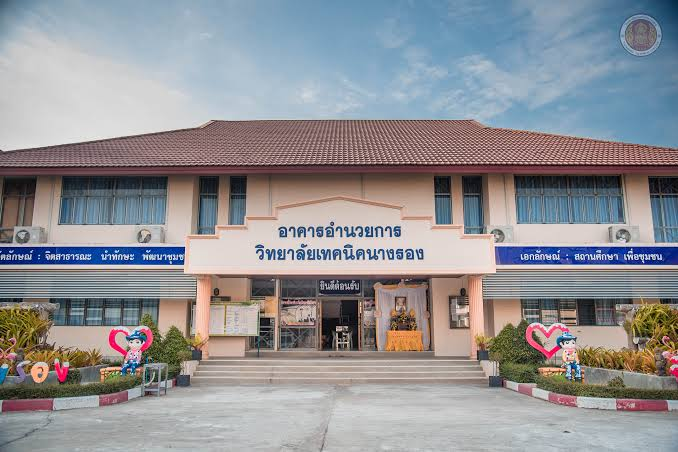
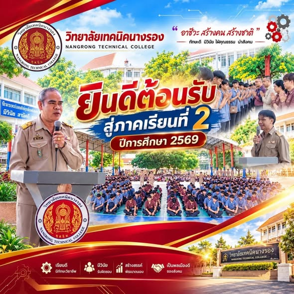

ยินดีต้อนรับสู่เว็บไซต์ข้อมูลวิทยาลัย
วิทยาลัยเทคนิค
นางรอง
NANGRONG TECHNICAL COLLEGE
แหล่งเรียนรู้วิชาชีพเพื่อสร้างทักษะจริงและต่อยอดอนาคต ค้นหาข้อมูลสถานศึกษา แผนที่การเดินทาง และช่องทางติดต่อได้ในที่เดียว
NRT · BURIRAM

ฝึกทักษะ สร้างอาชีพเรียนรู้เพื่ออนาคต
EXPLORE NRT
03 เมนูหลักต้องการค้นหาข้อมูลอะไร?
เลือกหัวข้อที่สนใจเพื่อไปยังหน้าข้อมูลโดยตรง
01
รายละเอียดเกี่ยวกับวิทยาลัย
ทำความรู้จักสถานศึกษา แนวทางการเรียน และกลุ่มสาขาวิชาที่เปิดสอน
อ่านข้อมูลวิทยาลัย
02
แผนที่และการเดินทาง
ดูตำแหน่งวิทยาลัยบนแผนที่ พร้อมปุ่มเปิดเส้นทางผ่าน Google Maps
ดูแผนที่และเส้นทาง
03
ข้อมูลติดต่อวิทยาลัย
รวมที่อยู่ หมายเลขโทรศัพท์ และเว็บไซต์อย่างเป็นทางการของวิทยาลัย
ดูช่องทางติดต่อ

ภาพประชาสัมพันธ์วิทยาลัย
ยินดีต้อนรับสู่
ยินดีต้อนรับสู่
ภาคเรียนที่ 2 / 2569
ภาพกิจกรรมและบรรยากาศจากวิทยาลัยเทคนิคนางรอง ที่ส่งมาเพื่อใช้ประกอบหน้าเว็บไซต์
ดูรายละเอียดเกี่ยวกับวิทยาลัยSTAY CONNECTED
เข้าสู่เว็บไซต์ทางการเชื่อมต่อกับวิทยาลัยเทคนิคนางรอง
ศึกษาข้อมูลเพิ่มเติมและติดตามประกาศล่าสุดผ่านเว็บไซต์อย่างเป็นทางการของวิทยาลัย